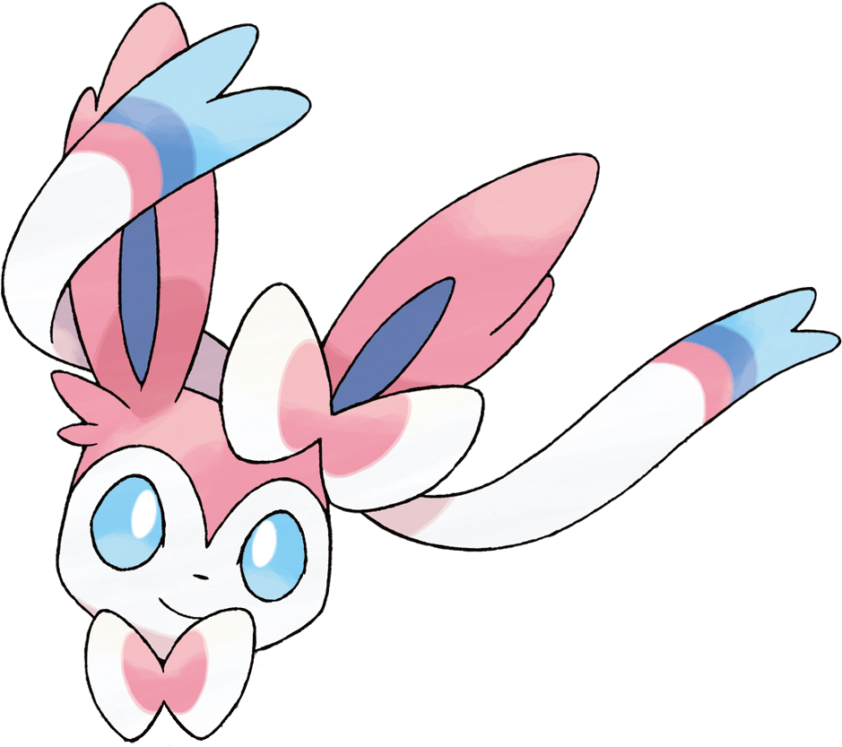

Bem-vindo ao meu site!
Este é o meu site pessoal, para organizar horários, disciplinas e rotina de estudos.
SOBRE MIM:
Me chamo Mariana, estudante de Ciencias da Computaçao, da E1 de 2026 da Unifil. tenho 18 anos, e participo do Nucleo de Práticas em Informática (NPI), onde estou aprendendo sobre o mundo da programaçao e melhorando meu desenvolvimento como aluna de Ciencias da Computaçao.
NPI:
No NPI alem de realizar monitoria do LondrinenseTech e Pensamento Computacional, realizo tarefas da faculdade e atividades de estudo, e quando tenho tempo livre gosto de ler meu livros, estudar sobre alguma linguagem de programaçao ou algum novo idioma.
Meus hobbies:
- ˚⟡˖࣪Programar
- ˚⟡˖ ࣪Jogar online
- ˚⟡˖ ࣪Ouvir musica
- ˚⟡˖ ࣪fazer crochet
- ˚⟡˖ ࣪Ler
- ˚⟡˖ ࣪Colecionar Pokemon